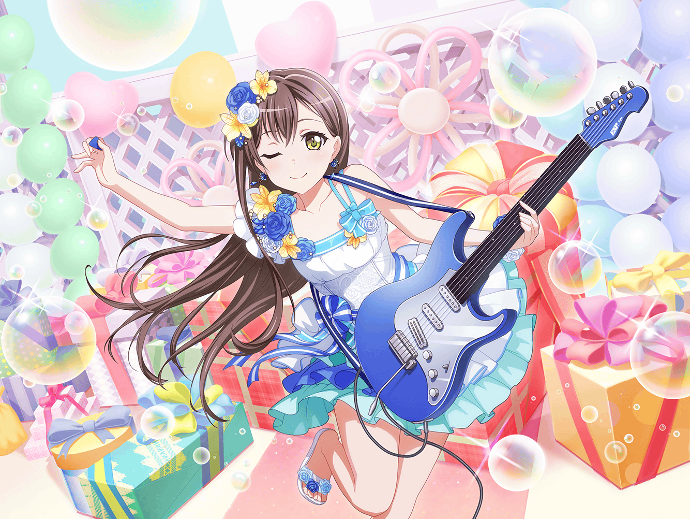
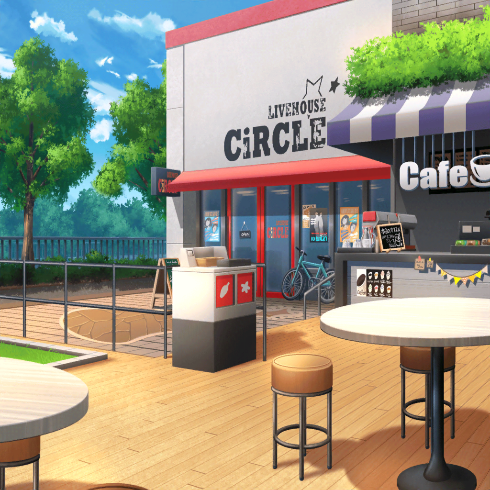

たえ
いい天気だなぁ……
たえ
確か、今日はライブハウスでの練習だったはず
たえ
久しぶりのライブハウスだし
みんなも気合い入ってるかも……
たえ
あ、{{userName}}さんだ
たえ
{{userName}}さん、こんにちは。
今日はいい天気だね
たえ
そういえば{{userName}}さんは、
何をしてたの？
たえ
もしかして、玄関前の掃き掃除？
たえ
……違う？ 買い出し？？
たえ
あ、これから仕事なんだ。
大変だね……。
たえ
私がここにいるのは、これから練習かって？
たえ
……うん、練習に行く途中だよ
たえ
この間のバースデーライブの後から、
しばらく練習お休みしてたから、久しぶりかな
たえ
あ、{{userName}}さんは知らなかったんだ。
この前、私達バースデーライブに参加したんだよ。
たえ
誰のバースデーライブって……ゆりさんのだよ
たえ
そう、りみのお姉ちゃん
たえ
あ、そうだよね。
スタッフさんだから、知ってるのも当たり前だよね
たえ
ごめん、{{userName}}さんと結構話してるから
たまに、スタッフさんってことを忘れちゃう
たえ
悪気はないよ？
本当だよ？？
たえ
わかってるって？
ならいんだけど……
たえ
ああ。
バースデーライブの話の途中だったね
たえ
まぁ、そのゆりさんのバースデーライブのために、
一週間で新曲を作ったりして駆け抜けたから
少し練習をお休みにしてたんだ
たえ
そう。１週間で曲をつくって、演奏を仕上げるところまでを
やったの
たえ
今まで曲を作る時はじっくりやってきたから
こういう体験は初めてだった
たえ
……うん。やっぱり{{userName}}さんの言うとおり、
なかなかない体験だと思う
たえ
でも、すごく楽しかった。
ライブ前日には、みんなで有咲の蔵に集まって、
泊まりで練習したし
たえ
蔵に布団を敷いて、
みんなでお泊まり会みたいなこともしたんだ
たえ
蔵のなかってすごく落ち着くんだ。
夜はひんやりしてて、静かで……
たえ
ひとりだったら、落ち着きすぎて寝ちゃってたかもしれないけど、
みんなが一緒だったから、眠くなかったよ
たえ
同じ時間をたくさん過ごすことができて、
すごく楽しかったし、もっともっとみんなと仲良くなれた
気がするから
たえ
だからこそ、
バースデーライブも成功したと思うし
たえ
うん。{{userName}}さんもそう思ってくれてうれしい
たえ
え？ 時間？
時間がどうしたの？
たえ
……あ、そうだった、
こんなふうに喋ってる時間ないんだった
たえ
久しぶりの練習だしね。
たえ
みんな首を長くして待ってるかもしれないし……
たえ
じゃあ、そろそろ行くから。
またね